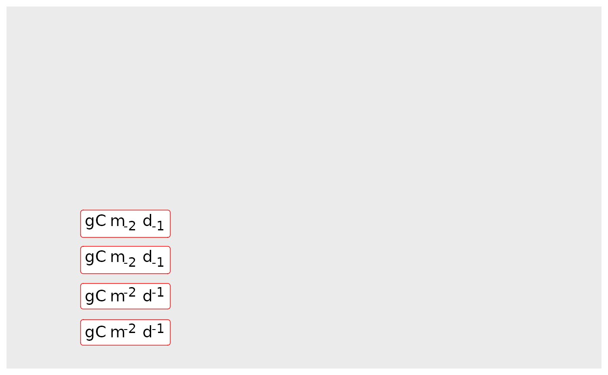
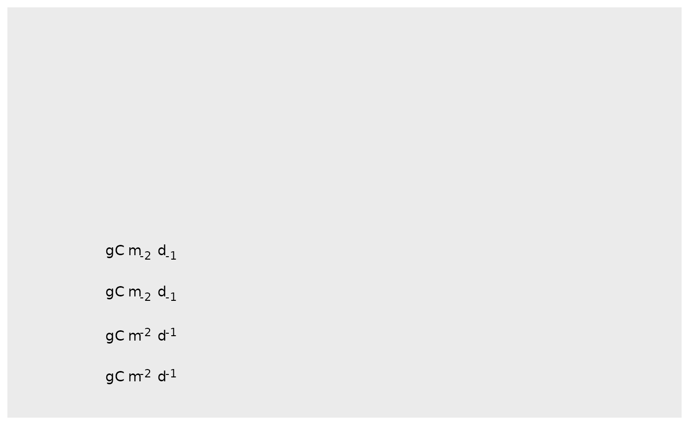
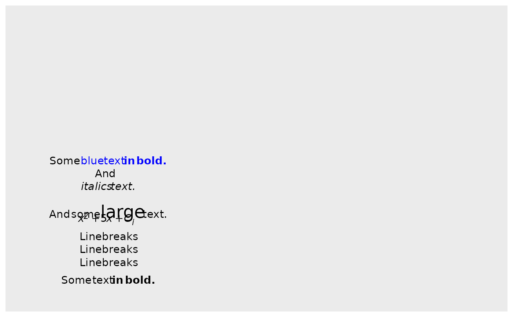
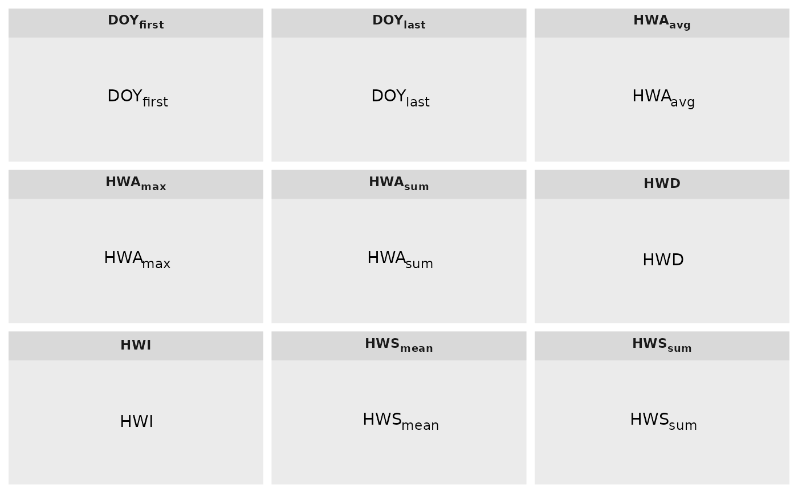

geom_richtext_npc.RdText with Normalised Parent Coordinates
geom_richtext_npc(
mapping = NULL,
data = NULL,
stat = "identity",
position = "identity",
...,
nudge_x = 0,
nudge_y = 0,
label.padding = unit(c(0.25, 0.25, 0.25, 0.25), "lines"),
label.margin = unit(c(0, 0, 0, 0), "lines"),
label.r = unit(0.15, "lines"),
na.rm = FALSE,
show.legend = FALSE,
inherit.aes = FALSE
)
annotate_richtext_npc(x, y, label, size = 5, family = "", ...)
annotate_richlabel_npc(
x,
y,
label,
size = 5,
family = "",
fill = "white",
label.color = "black",
...
)
annotate_label_npc(
x,
y,
label,
size = 5,
family = "",
fill = "white",
label.color = "black",
...
)Set of aesthetic mappings created by aes() or
aes_(). If specified and inherit.aes = TRUE (the
default), it is combined with the default mapping at the top level of the
plot. You must supply mapping if there is no plot mapping.
The data to be displayed in this layer. There are three options:
If NULL, the default, the data is inherited from the plot
data as specified in the call to ggplot().
A data.frame, or other object, will override the plot
data. All objects will be fortified to produce a data frame. See
fortify() for which variables will be created.
A function will be called with a single argument,
the plot data. The return value must be a data.frame, and
will be used as the layer data. A function can be created
from a formula (e.g. ~ head(.x, 10)).
The statistical transformation to use on the data for this layer, as a string.
Position adjustment, either as a string, or the result of
a call to a position adjustment function. Cannot be jointy specified with
nudge_x or nudge_y.
Other arguments passed on to layer(). These are
often aesthetics, used to set an aesthetic to a fixed value, like
colour = "red" or size = 3. They may also be parameters
to the paired geom/stat.
Horizontal and vertical adjustment to nudge labels by.
Useful for offsetting text from points, particularly on discrete scales.
Cannot be jointly specified with position.
Horizontal and vertical adjustment to nudge labels by.
Useful for offsetting text from points, particularly on discrete scales.
Cannot be jointly specified with position.
Amount of padding around label. Defaults to 0.25 lines.
Unit vector of length four specifying the margin outside the text label.
Radius of rounded corners. Defaults to 0.15 lines.
If FALSE, the default, missing values are removed with
a warning. If TRUE, missing values are silently removed.
logical. Should this layer be included in the legends?
NA, the default, includes if any aesthetics are mapped.
FALSE never includes, and TRUE always includes.
It can also be a named logical vector to finely select the aesthetics to
display.
If FALSE, overrides the default aesthetics,
rather than combining with them. This is most useful for helper functions
that define both data and aesthetics and shouldn't inherit behaviour from
the default plot specification, e.g. borders().
A numeric vector or unit object specifying x-values.
A numeric vector or unit object specifying y-values.
A character or expression vector. Other
objects are coerced by as.graphicsAnnot.
geom_richtext() understands the following aesthetics (required
aesthetics are in bold; select aesthetics are annotated):
x
y
label
alpha
angle
colour Default color of label text and label outline.
family
fontface
fill Default fill color of label background.
group
hjust
label.colour Color of label outline. Overrides colour.
label.size Width of label outline.
lineheight
size Default font size of label text.
text.colour Color of label text. Overrides colour.
vjust
library(ggplot2)
## first example
labels <- c(
"gC m^{-2} d^{-1}",
"gC m^-2 d^-1",
"gC m_{-2} d_{-1}",
"gC m_-2 d_-1"
# "gC \n mm/d"
)
x = 0.2
y = seq_along(labels)/10
ggplot() + annotate_richtext_npc(x, y, labels, size = 5)
ggplot() + annotate_richlabel_npc(x, y, labels, size = 5, label.color = "red")

# Another option
d = data.frame(x = 0.2, y = seq_along(labels)/10, label = labels)
ggplot(d, aes(npcx = x, npcy = y)) +
geom_richtext_npc(aes(npcx = x, npcy = y, label = label))

# remove fill and label.color
ggplot(d, aes(npcx = x, npcy = y)) +
geom_richtext_npc(aes(npcx = x, npcy = y, label = label),
fill = "white", label.color = "red")
## second example
d$label <- c(
"Some text **in bold.**",
"Linebreaks<br>Linebreaks<br>Linebreaks",
"*x*<sup>2</sup> + 5*x* + *C*<sub>*i*</sub>",
"Some <span style='color:blue'>blue text **in bold.**</span><br>And
*italics text.*<br>
And some <span style='font-size:18pt; color:black'>large</span> text."
)
ggplot(d, aes(npcx = x, npcy = y)) +
geom_richtext_npc(aes(npcx = x, npcy = y, label = label))

## test for `str_mk`
library(magrittr)
indexes_lev = c("DOY_first", "DOY_last", "HWD", "HWI", "HWS_mean",
"HWS_sum", "HWA_avg", "HWA_max", "HWA_sum")
labels = indexes_lev %>% str_mk() #%>% label_tag(expression = F)
d = data.frame(x = 0.5, y = 0.5, label = labels)
ggplot(d) +
facet_wrap(~label) +
theme(strip.text.x = element_textbox(face = "bold")) +
geom_richtext_npc(aes(npcx = x, npcy = y, label = label))
